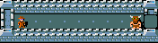

Easy
Default limit: 50 actions
Wand in inventory; sleeping minotaur.
Goal: Kill the minotaur.

This browser does not support the game. Try a current version of Chrome, Firefox or Safari.
Select a level and start a game.
Agent view, centred on the player: the 9×9 window the network receives; blue squares are where the agent has stood. Outside it, the agent knows only where the nearest items, staircases and monsters are; far ones are shown at the edge, in their direction.
In this task, the wand of death may be listed by its material name.